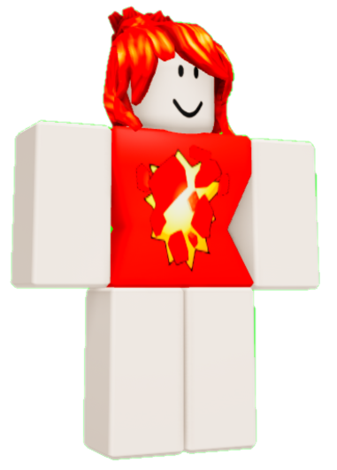
Культ 1012
Культ 1012|
Что это такое ваш культ 1012?
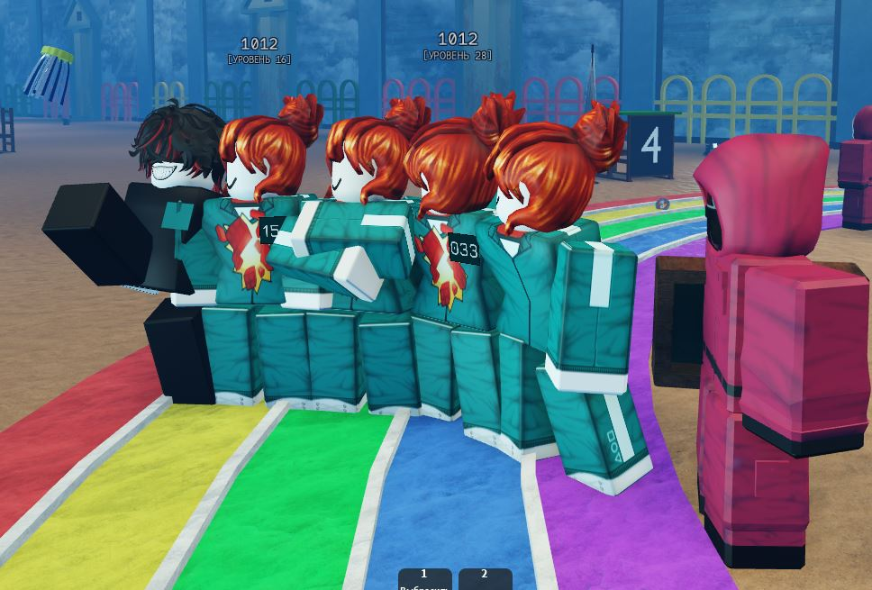
Видео-инструкция
Посмотрите короткое видео, чтобы узнать, как попасть в культ 1012
Почему мы?
✅Легко попасть
✅Нет токсичных игроков
✅Можно выйти в любой момент
Стать подтверждённым участником культа
Введи свой Roblox никнейм(обязательно, тот что после "@")
Мы проверим, подходишь ли ты по требованием культа(об этом видео выше), и если всё пройдёт успешно, вы попадёте в список культа ниже
Список культа:
Dferv_Dev✅
DmVinv✅
1012✅
Dimking_Guard✅
Лор.
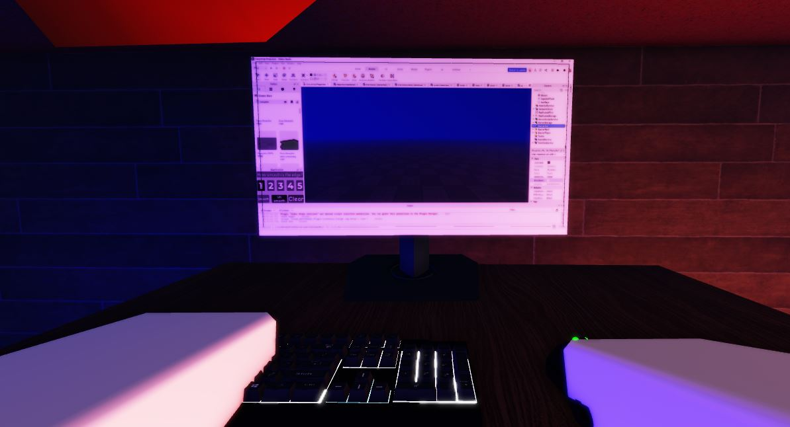
Глава I. Находка в глуши каталогов
В ту пору основателю нашего союза, юноше по имени 1012, едва исполнилось одиннадцать лет — ибо рожден он был в благословенном 2015 году. Душа его, не знавшая еще забот света, искала лишь невинных развлечений на просторах Роблокса. Признаться горько, но он не имел ни малейшего призвания к наукам: он был ни капельки не скриптер, решительно не умел кодить и в программировании был совершенный профан, устремляющий свой взор в монитор с чистым, девственным простодушием.В один из скучных, томительных вечеров, блуждая без цели по заброшенным вкладкам, он отворил Roblox Studio. Перст его, ведомый чистой случайностью, листал бесконечные страницы неиспользуемых файлов, пока не замер на самой глухой свалке бесплатных ассетов.Там, в пыли забытых серверов, покоился старый манекен — Первый Танцор. Облик его был самобытен и дерзок: огненный принт на багровой кофте, яркие рыжие волосы, убранные в лаконичный пучок, и удивительная, ломаная пластика движений, именовавшаяся Mouse Animations. Сия моделька никогда не знала популярности; счетчик скачиваний уныло замер на нуле. Неизвестный автор создал этого персонажа в начале десятых годов и бросил на произвол судьбы.
Глава II. Внезапное поучение
Юноша, плененный дивным танцем, вознамерился скопировать анимацию в свой пустой тестовый плейс. Но едва манекен коснулся карты, как старый, неотлаженный код выдал непредвиденную ошибку. Встроенный диалоговый скрипт, спавший годами, внезапно активировался. Но вместо сухого системного лога или стандартных фраз разработчика, Огненный Танцор вывел над своей головой текстовое окно и обратился к нашему герою с глубокой, человеческой мудростью.Он окинул взором пестрый, безвкусно обвешанный дорогими вещами аватар мальчика и произнес:
— Вся эта роскошь, за которой вы так слепо гонитесь, — лишь пустые пиксели, призванные скрыть вашу одинаковость. Вы тратите тысячи робуксов, дабы казаться уникальными, но в итоге сливаетесь в одну шумную, тщеславную толпу, где никто никого не замечает.
Юноша замер у экрана, пораженный до глубины сердца. А мудрый манекен продолжал:
— Истинная сила — в осознанной простоте. Этот (мой)скин не имеет цены и не следует моде. Но если ты облачишься в него, ты перестанешь тратить время на то, кем ты хочешь казаться, и наконец поймешь, кто ты есть на самом деле. Носи его не ради внешней красы, а ради внутренней тишины.
Глава III. Рождение культа
Слова сии, простые и вместе с тем великие, мгновенно перевернули сознание молодого человека. Отрезвление его было полным. Он тотчас очистил свой аватар от наносного донатного глянца, принял облик Первого Танцора, а к хаотичному своему нику приписал священные цифры 1012 — как вечный памятник той судьбоносной встрече.Так зародился наш Культ. Отныне единственное наше правило — неизменно носить этот скин. Богач ли ты, сорящий монетой, или скромный новичок — перед идеалом 1012 все равны. Мы отрекаемся от оценки людей по стоимости их пикселей, дабы воскресить дух искреннего веселья и нерушимого братства.
Галерея 1012:
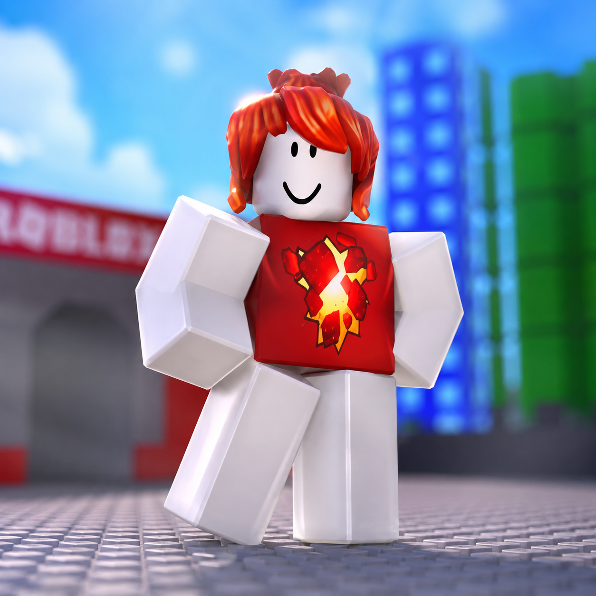
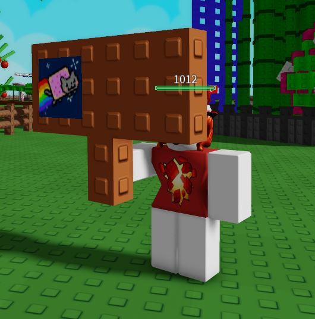
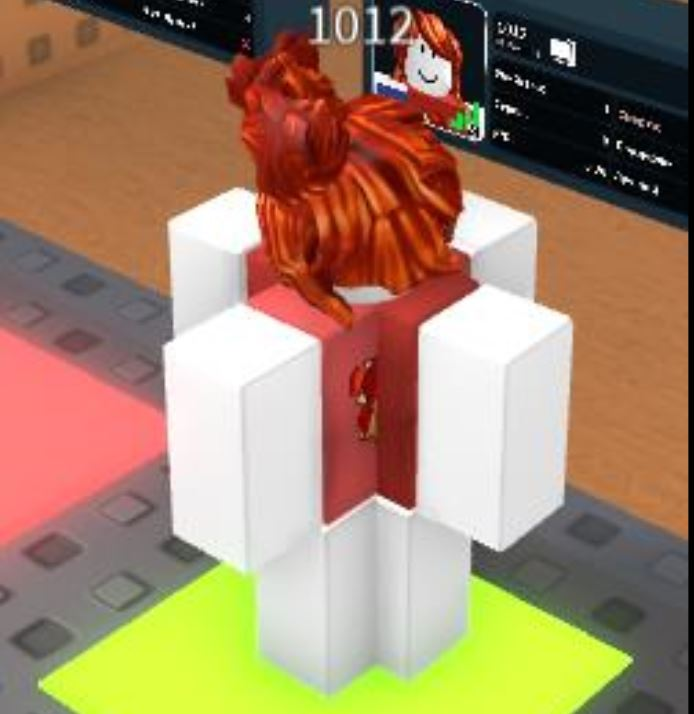
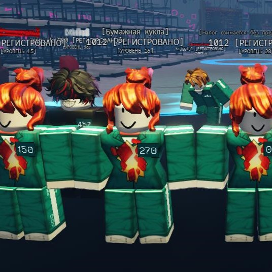
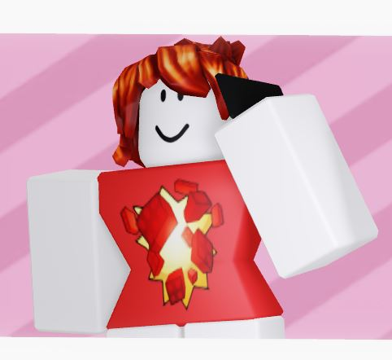
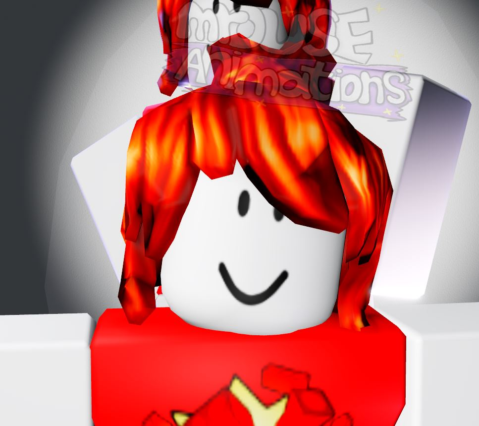
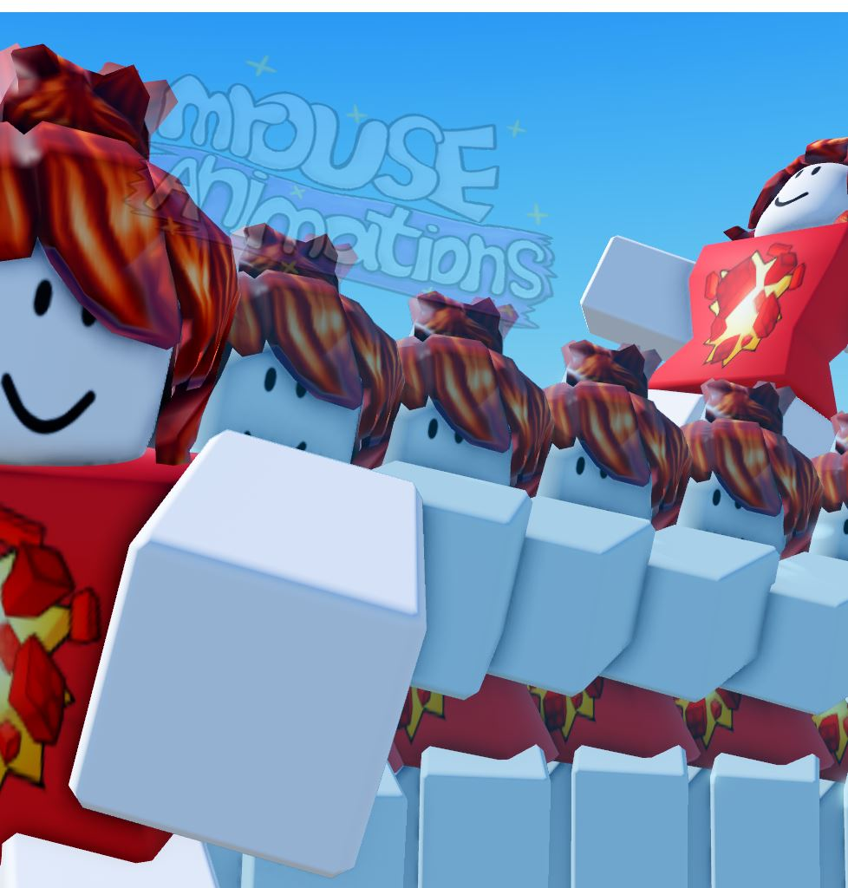
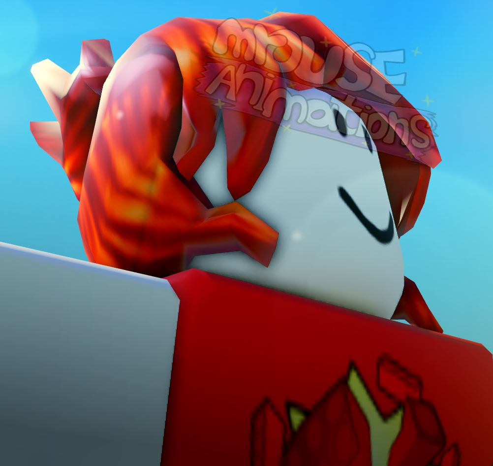
Культ 1012.™







